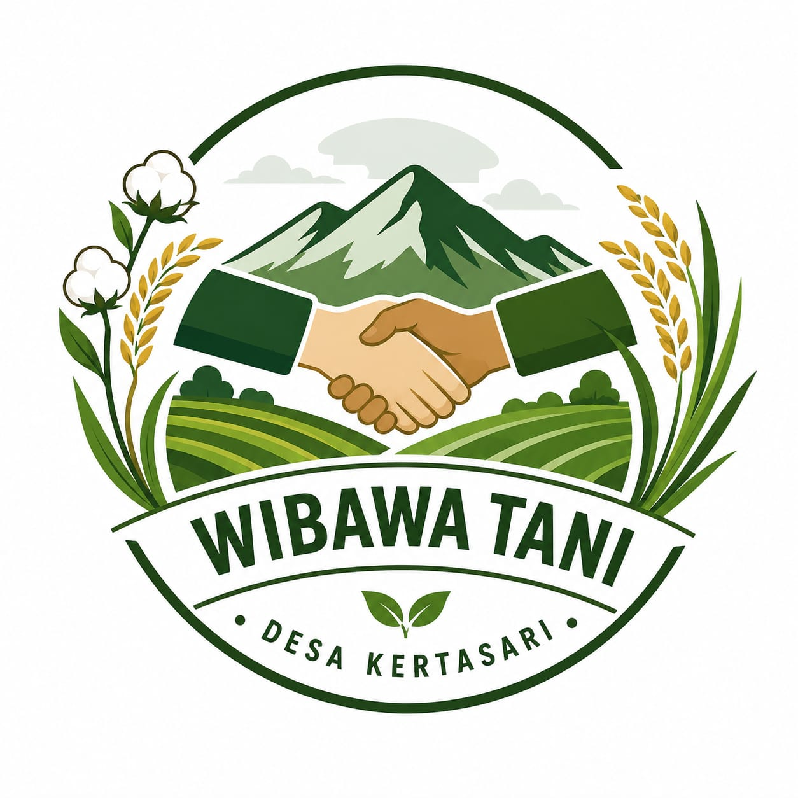

Wibawa Tani menghadirkan hasil pertanian segar dari Desa Kertasari, dikelola bersama Karang Taruna setempat.

Wibawa Tani lahir dari semangat gotong royong warga desa kertasari. usaha ini bermula dari program Poktan (Kelompok Tani) yang membimbing warga dalam proses bercocok tanam, mulai dari pengolahan lahan hingga cara merawat tanaman agar dapat menghasilkan panen yang baik.
Seiring berjalannya waktu, kegiatan bertani warga ini berkembang berkat kerja sama dengan karang taruna desa kertasari. kolaborasi antara poktan dan karang taruna inilah yang kemudian membentuk wibawa tani sebagai wadah bersama untuk mengelola dan memasarkan hasil pertanian warga secara lebih terorganisir.
Semangat kolaborasi antara warga inilah yang menjadi pondasi utama wibawa tani. bukan sekedar usaha jual beli hasil tani, wibawa tani juga menjadi simbol kebersamaan dan kerja sama lintas generasi antara kelompok tani dan generasi muda desa.
Hingga saat ini, wibawa tani terus berkembang menjadi salah satu pengerak ekonomi pertanian di desa kertasari, membantu warga memasarkan hasil bumi seperti timun, buncis, dan terong langsung kepada pembeli, dengan memanfaatkan teknologi digital seperti pemasanan via WhatsApp agar lebih mudah di jangkau masyarakat luas.
Membimbing proses bercocok tanam, memberikan pendampingan kepada petani, serta membantu meningkatkan kualitas dan produktivitas hasil pertanian.
Mitra kerja sama yang mendorong perkembangan usaha.
Penggerak ekonomi pertanian warga hingga saat ini.
Hubungi Wibawa Tani langsung lewat WhatsApp untuk tanya stok, harga, atau cara pemesanan.
Note: Harga mengikuti harga pasar karena bisa berubah-ubah.